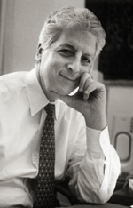

»Jonathan Cole«

Jonathan Cole, '64C '69GSAS, served as Columbia's provost from 1989 until 2003. His 43-year career was spent entirely at Columbia. He began as a history major at Columbia College, earned a Ph.D., with highest honors, in sociology, and, as a member of the Columbia faculty, went on to explore the nature of quality in scientific research and discovery. In 1987, he was named vice president for arts and sciences and the Quetelet Professor of Social Science. In 2001, he became the John Mitchell Mason Professor of the University, one of Columbia's highest distinctions.